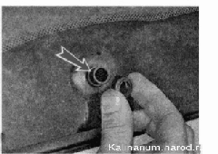

Очиститель заднего стекла снятие и установкаСнятие 1. Подготавливаем автомобиль к выполнению работы. 2. Приподнимаем защитную крышку гайки крепления рычага стеклоочистителя.
3. Накидным ключом на 10 мм отворачиваем гайку крепления рычага стеклоочистителя
4. Снимаем рычаг с вала моторредуктора. 5. Снимаем обивку двери багажного отделения. 6. Отсоединяем колодку жгута проводов 1 от мотор-редуктора. Торцовым ключом на 10 мм отворачиваем три гайки 2 крепления мотор-редуктора. 7. Снимаем мотор-редуктор, аккуратно выводя его вал из отверстия двери багажного отделения. 8. При необходимости с наружной стороны двери снимаем дистанционную шайбу и резиновое уплотнение (показано стрелкой). 
9. Извлекаем из отверстия двери направляющую втулку вала. Установка Устанавливаем стеклоочиститель в обратной последовательности. Перед установкой рычага кратковременно включаем стеклоочиститель. Выждав пока стеклоочиститель отработает полный цикл, закрепляем на валу мотор-редуктора рычаг так, чтобы щетка располагалась горизонтально с левой стороны стекла. |